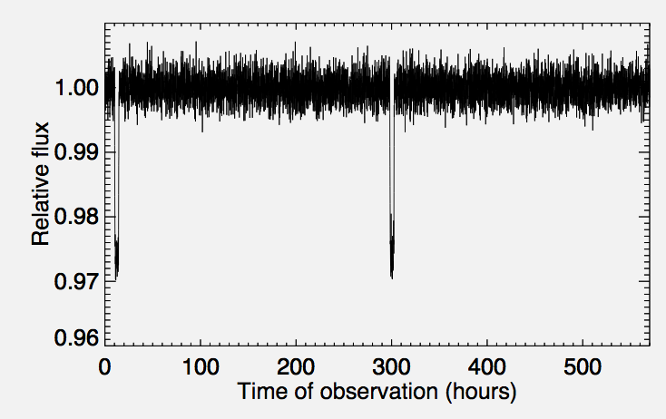

Forrige side🙂 🙁Introduksjon


Innleveringsppgave 1C4 går ut på å bruke stjerneobservasjoner (som i figurene) til å finne ut av planetens egenskaper.
Bl.a. kan du finne størrelse, masse og sammensetningen av en planet i bane rundt en fjern stjerne, uten å noengang se planeten direkte. Til dette trenger vi å bruke en del av det som du lærte i de forrige forelesningene samt at du trenger å lære litt om analyse av data. Men før vi setter igang så skal vi varme opp litt med å fort sjekke at vi har kunnskapen fra del 1A og 1B på plass, samt se hva du allerede kan om temaene i del 1C. Trykk her for å varme opp
Er du klar og har sendt inn skjemaet? Nei Ja